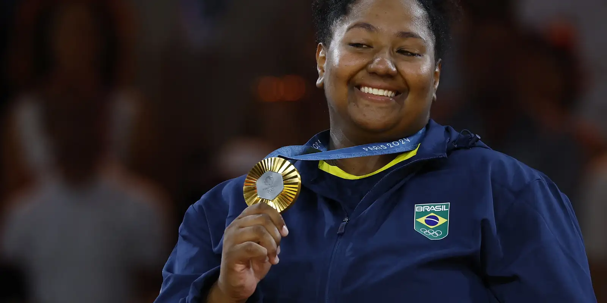

Ouro em Paris 2024, Bia Souza é indicada a melhor judoca do mundo
Campeã olímpica e medalhista de bronze por equipes nos Jogos Olímpicos de Paris 2024, Beatriz Souza foi indicada, nesta terça-feira (10), ao prêmio de melhor judoca do ano

Bia Souza indicada

Medalha de ouro para o Brasil